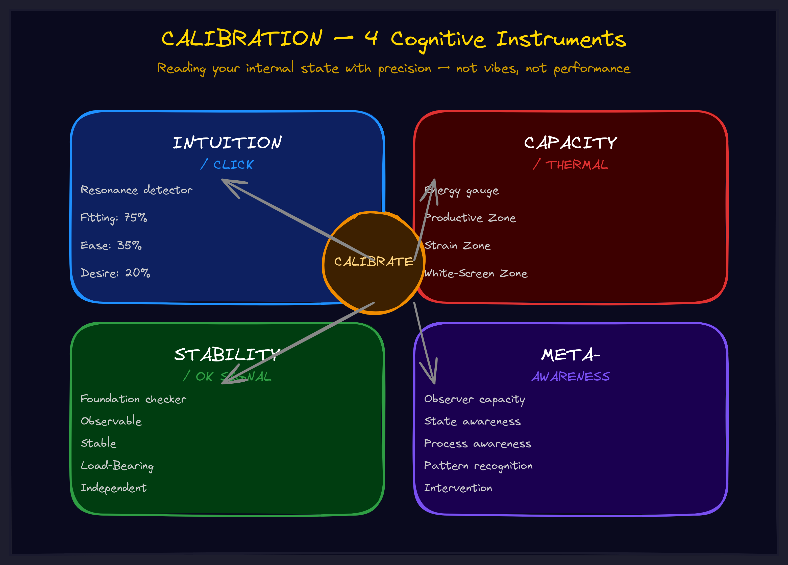

May 2026Level 6 · ConcentrationThe operator
Calibration: Why Your Best Judgment Keeps Betraying You
You trust your intuition. You trust your gut. But have you ever tracked whether your gut is actually right? When I started tracking mine, "fitting clicks" were right 75% of the time, "ease clicks" 35%, "desire clicks" 20%. I had been treating all three the same.

The Uncalibrated Life
You feel something click. An idea resonates. A strategy feels right. A hire seems perfect. So you act on it.
Sometimes you are right. Sometimes you are catastrophically wrong. You cannot tell the difference in the moment.
This is the uncalibrated state. Your cognitive instruments — intuition, capacity sensing, stability detection — are giving you readings all day long. "This is good." "I am tired." "This is solid enough to build on." But you have never checked whether those readings are accurate. You are flying a plane with instruments you have never tested.
I trusted my intuition for years. Then I started tracking it. What I found was humbling:
- "Fitting clicks" — where a structure resonated deeply — were right about 75% of the time.
- "Ease clicks" — the relief of having an answer — were right about 35% of the time.
- "Desire clicks" — wanting something to be true — were right about 20% of the time.
I had been treating all three the same. No wonder some decisions worked and others exploded.
What Calibration Actually Is
Calibration is not a personality trait. It is not "being measured" or "staying rational." It is a process — the same process that makes any instrument reliable.
When you calibrate a thermometer, you expose it to a known temperature and check whether its reading matches. When it does not, you adjust. Over many cycles, the thermometer becomes accurate — not because it was built differently, but because it was tested against reality.
Your cognitive instruments work the same way. Intuition is an instrument. Capacity sensing is an instrument. Your sense of "this is stable enough to build on" is an instrument. Each one gives readings. Each one can be calibrated.
The loop is simple:
- Notice the reading. "This clicked." "I am overheating." "This feels stable."
- Record it. What triggered it, what context, what you decided.
- Later, verify. Was the click right? Were you actually overheating or just anxious? Did the "stable" thing hold weight when you built on it?
- Update your interpretation. "Clicks after excitement are less reliable." "Tight chest means real heat, not anxiety." "Things that work across three contexts are usually stable."
- Apply the update. Next time, interpret based on data — not assumption.
This loop runs continuously. Calibration is never finished. It just gets increasingly accurate.
The Four Instruments
Intuition — The Click
Your intuition fires constantly. Something clicks. Something feels off. Something resonates. The question calibration answers is: which of your clicks should you trust?
Not all clicks are created equal. A structural click — where a framework or idea fits together at a deep level — is a different animal than a desire click — where you want something to be true so badly that "wanting" masquerades as "knowing." Calibration separates these by tracking outcomes over time.
The payoff is enormous. Instead of "I have a feeling about this" you get "this is a fitting click, and my fitting clicks have a 75% success rate in this domain." That is actionable intelligence.
Capacity — The Thermal Sense
You know you have limits. But do you know where they are? Most people discover their thermal thresholds by crashing through them — working until they white-screen, then feeling guilty about burning out.
Calibrated capacity sensing means knowing your zones. Level 3 is strain — still functional but effortful. Level 4 is damage — continued work causes breakdown. Meetings burn faster than coding. Mornings have more capacity than evenings. These are not universal truths. They are your thresholds, discovered by tracking, not by theory.
Stability — The OK Signal
Before you build the next layer of anything — a strategy, a product, a team structure — you need to know the current layer is solid. But what counts as solid?
Uncalibrated, "it worked once" might be enough. Calibrated, you discover that "worked once" is only 30% stable. "Worked across three contexts" is 80% stable. "Independently verified by someone else" is 85%. Your personal stability threshold — the signal strength required before you advance — is something only calibration can reveal.
Meta-Awareness — Noticing the Readings
The subtlest instrument. When do you even notice that your intuition fired? When do you catch that you are overheating? What are your blind spots — the situations where your instruments give readings and you miss them entirely?
Meta-awareness is the instrument that makes calibration possible. Without it, you cannot observe the readings. Without observations, you cannot record. Without records, you cannot calibrate.
The Organizational Implications
Calibration is not just personal. It scales.
Every organization runs on judgment calls. Hiring decisions. Strategy pivots. Product bets. Technology investments. Each of these involves someone's cognitive instruments producing a reading — "this is the right call" — and the organization acting on it.
How many of those instruments have been calibrated?
An uncalibrated organization makes decisions based on intuitions nobody has tested. Confidence masquerades as competence. Strong feelings masquerade as evidence. "I have a good feeling about this market" drives a million-dollar bet without anyone asking: how often are your good feelings actually right?
A calibrated organization knows its accuracy rates. It knows which types of judgment calls are reliable and which need additional verification. It knows whose intuition to trust in which domains. This is not replacing intuition with data — it is making intuition trustworthy by testing it against data.
The difference compounds. Every calibrated decision is slightly more likely to be correct. Over hundreds of decisions per quarter, that slight edge produces dramatically different outcomes.
Calibration does not eliminate uncertainty. It eliminates the uncertainty about your uncertainty. You still do not know the future — but you know how much to trust your prediction.
The Monday Morning Protocol
Here is how you start. Weekly or monthly, run this check:
1. Review accuracy data. For any instrument you have been tracking — clicks, thermal readings, stability assessments — what were the readings and what were the outcomes?
2. Update interpretations. Any patterns emerging? Any readings consistently wrong? Any conditions that affect accuracy?
3. Adjust thresholds. Are your thresholds still accurate? Has your capacity changed? Does "stable" need redefinition?
4. Identify gaps. Any instruments you are not tracking? Any patterns you are not sure about? Start recording if needed.
5. Apply updated calibration. Going forward, interpret readings based on your data — not assumptions, not theory, not what worked for someone else.
The first month feels tedious. By the third month, you start noticing patterns. By the sixth month, you are making decisions with a clarity you did not know was possible — because every decision is backed by your own accuracy data.
Go Deeper
Calibration is part of the TWI framework library — a set of operational frameworks for individuals and organizations building with AI and navigating complexity. It connects to Thermal Dynamics (capacity management) and the broader tower-building methodology.
Explore the full framework library →
Want to build a calibrated decision-making culture in your organization? We work directly with leadership teams to implement frameworks that compound.